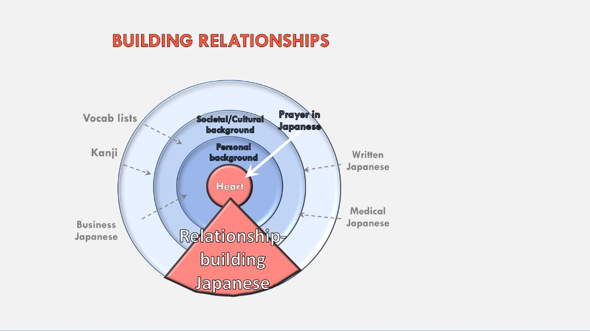
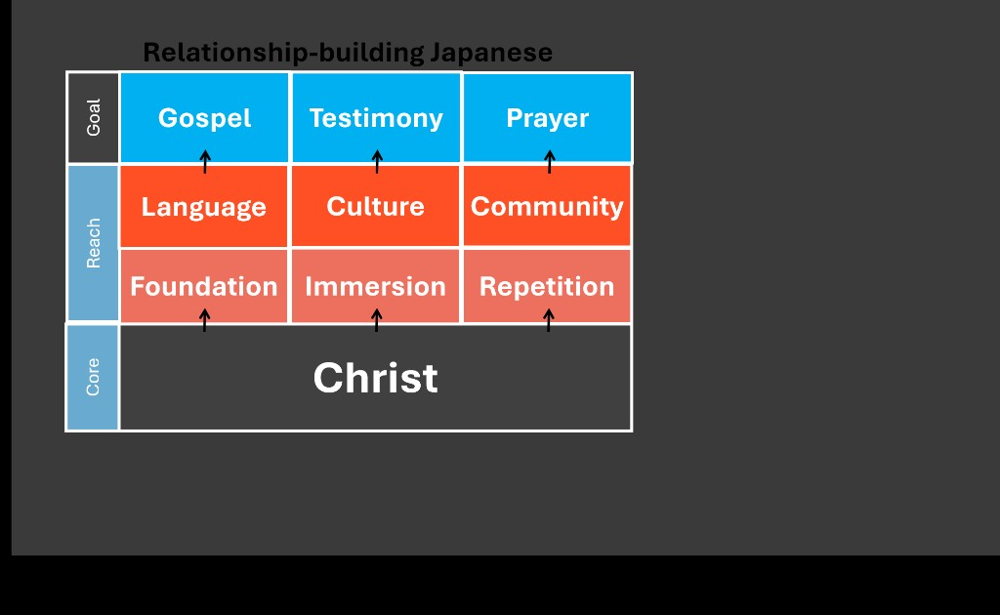

The full core list is its own page — the Quizlet decks, plus つまり, 例えば, and わざと.
Japanese Language Mentor
Learn & speak first. Grammar gets bigger later — when you need bigger answers. Your pace.

Tap for fullscreen (tilt sideways)

Tap for fullscreen (tilt sideways)
Every day
Situation cards
Practice with your spouse. Think about it on the train.
Demo: one situation card a day (daily quest) — later.
Past first. Keep it short — just get た・だ down.
One way to share it — after した
Situation cards (need HW + practice)
Invite your friend to a new ramen place that just opened.
Invite your neighbor to the Christmas church event.
You’ve already been using these. Now name the four types.
Situation cards
Simple “let’s go” / “let’s go see a movie” — not made yet.
One of each ending type:
Online HW + situation cards sit under each step — not a dump of grammar up front.
Living outline — we shape it as you grow. · JD